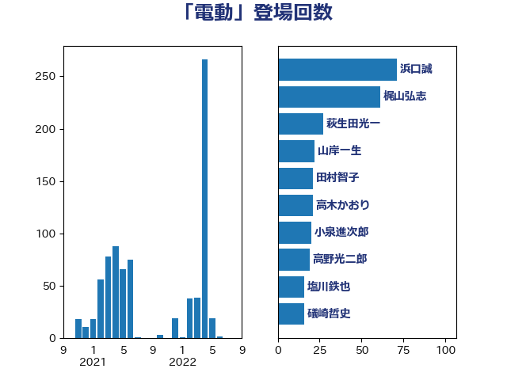

単語「電動」

| 浜口誠 | 国民民主党 | 71 回 |
| 梶山弘志 | 自由民主党 | 61 回 |
| 萩生田光一 | 自由民主党 | 27 回 |
| 山岸一生 | 立憲民主党 | 22 回 |
| 田村智子 | 日本共産党 | 21 回 |
| 高木かおり | 日本維新の会 | 21 回 |
| 小泉進次郎 | 自由民主党 | 20 回 |
| 高野光二郎 | 自由民主党 | 19 回 |
| 塩川鉄也 | 日本共産党 | 16 回 |
| 礒崎哲史 | 国民民主党 | 16 回 |
| 阿部司 | 日本維新の会 | 15 回 |
| 菅義偉 | 自由民主党 | 13 回 |
| 古川元久 | 国民民主党 | 11 回 |
| 山口壯 | 自由民主党 | 10 回 |
| 大島敦 | 立憲民主党 | 9 回 |
| 木村英子 | れいわ新選組 | 9 回 |
| 漆間譲司 | 日本維新の会 | 8 回 |
| 石井拓 | 自由民主党 | 8 回 |
| 石井章 | 日本維新の会 | 8 回 |
| 前原誠司 | 国民民主党 | 7 回 |
| 岸田文雄 | 自由民主党 | 6 回 |
| 森屋隆 | 立憲民主党 | 5 回 |
| 江島潔 | 自由民主党 | 5 回 |
| 浅野哲 | 国民民主党 | 5 回 |
| 藤川政人 | 自由民主党 | 5 回 |
| 金子俊平 | 自由民主党 | 5 回 |
| 音喜多駿 | 日本維新の会 | 5 回 |
| 大石あきこ | れいわ新選組 | 4 回 |
| 小野泰輔 | 日本維新の会 | 4 回 |
| 斉藤鉄夫 | 公明党 | 4 回 |
| 片山さつき | 自由民主党 | 4 回 |
| 竹谷とし子 | 公明党 | 4 回 |
| 赤羽一嘉 | 公明党 | 4 回 |
| 伊藤孝恵 | 国民民主党 | 3 回 |
| 小宮山泰子 | 立憲民主党 | 3 回 |
| 小熊慎司 | 立憲民主党 | 3 回 |
| 山本左近 | 自由民主党 | 3 回 |
| 後藤祐一 | 立憲民主党 | 3 回 |
| 新妻秀規 | 公明党 | 3 回 |
| 柿沢未途 | 無所属 | 3 回 |
| 森田俊和 | 立憲民主党 | 3 回 |
| 榛葉賀津也 | 国民民主党 | 3 回 |
| 落合貴之 | 立憲民主党 | 3 回 |
| 仁木博文 | 無所属 | 2 回 |
| 塩村あやか | 立憲民主党 | 2 回 |
| 小林鷹之 | 自由民主党 | 2 回 |
| 平山佐知子 | 無所属 | 2 回 |
| 木村次郎 | 自由民主党 | 2 回 |
| 渡辺猛之 | 自由民主党 | 2 回 |
| 田畑裕明 | 自由民主党 | 2 回 |
| 石井正弘 | 自由民主党 | 2 回 |
| 笹川博義 | 自由民主党 | 2 回 |
| 里見隆治 | 公明党 | 2 回 |
| 長坂康正 | 自由民主党 | 2 回 |
| 高村正大 | 自由民主党 | 2 回 |
| 鬼木誠 | 立憲民主党 | 2 回 |
| 三原じゅん子 | 自由民主党 | 1 回 |
| 上野賢一郎 | 自由民主党 | 1 回 |
| 北村経夫 | 自由民主党 | 1 回 |
| 山田宏 | 自由民主党 | 1 回 |
| 杉久武 | 公明党 | 1 回 |
| 石井啓一 | 公明党 | 1 回 |
| 竹内真二 | 公明党 | 1 回 |
| 細田健一 | 自由民主党 | 1 回 |
| 緒方林太郎 | 無所属 | 1 回 |
| 葉梨康弘 | 自由民主党 | 1 回 |
| 足立康史 | 日本維新の会 | 1 回 |
| 遠藤良太 | 日本維新の会 | 1 回 |
| 鈴木敦 | 国民民主党 | 1 回 |
| 長友慎治 | 国民民主党 | 1 回 |